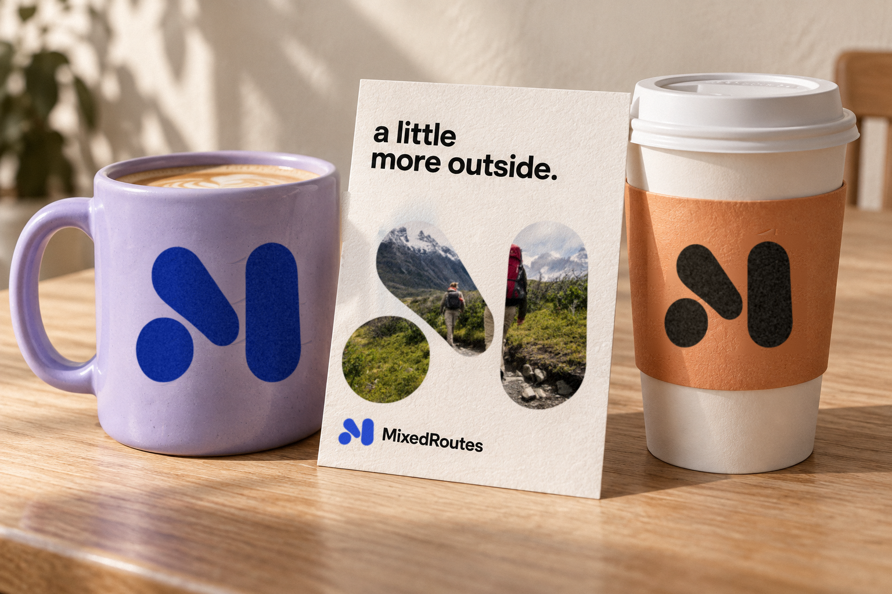

01 / The circle
It starts with you.
The smallest piece is a person, a pin on the map, or the spark of an idea. Small does not mean minor: one coffee with one friend counts.
Option C / Concept 3 of 3
Distinct shapes form one mark, like people, places, and plans coming together on MixedRoutes.
01 / The mark
The same four backgrounds for every concept, so the marks can be compared side by side.
02 / The thinking behind C
Nobody is just one interest. It is a gig on Friday, a hike on Sunday and coffee with someone new in between. The mark gives that mix a shape: three distinct pieces that only make an M when they come together.
The smallest piece is a person, a pin on the map, or the spark of an idea. Small does not mean minor: one coffee with one friend counts.
The angled piece is movement. It leans out of the familiar toward the new thing: the class you keep meaning to try, the friend of a friend.
The tall piece is the anchor: the place, the time, the plan that is actually happening. It steadies the lean of the diagonal and makes the idea real.
None of the pieces touch, and none lose their shape. Side by side they read as a loose M without merging into one block. That is MixedRoutes: different people and interests sharing one experience while staying themselves.
The gaps keep each piece readable and leave room to join in. Rounded ends keep it friendly, and the asymmetry keeps it lively.
Apricot, lilac and blue tie the mark to the V2 colors. They signal variety, not fixed categories, so the mark works just as well in one color.
03 / At every size
A logo earns its keep at the small end. These are the sizes it lives at in the app and the browser.
04 / In use
Three everyday touchpoints with identical content across concepts. Only the mark changes.
 Live music · Friday
Live music · FridayJazz at the Blue Room starts at 8. Maya and 2 friends are going.
Social media for real life
Find something to do, bring your people, and spend more time together.
05 / Out in the world
The same scene for every concept. Generated mockup with the mark composited in.

One color on a curved, glazed surface.
Ink on kraft, read at a glance across the counter.
The mark becomes a window into the experience.